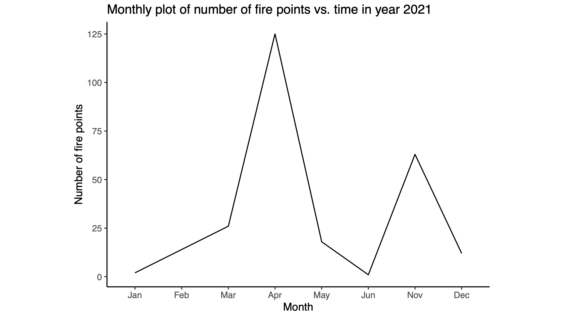
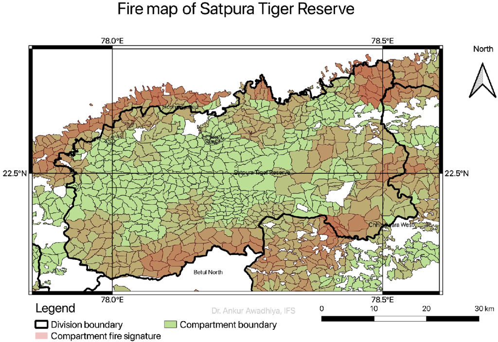
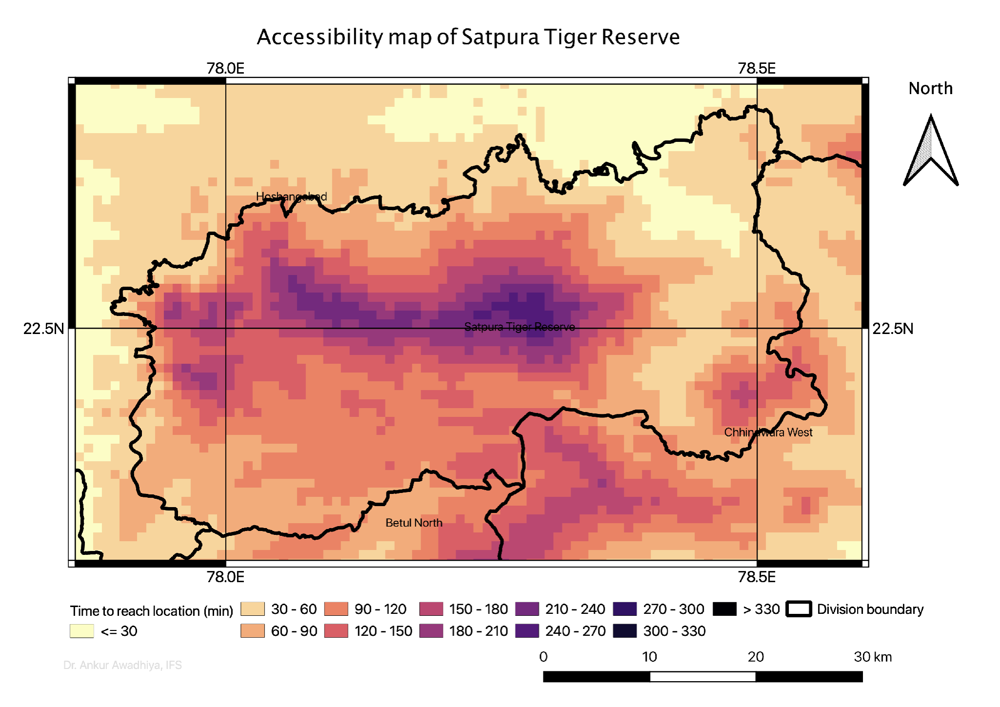
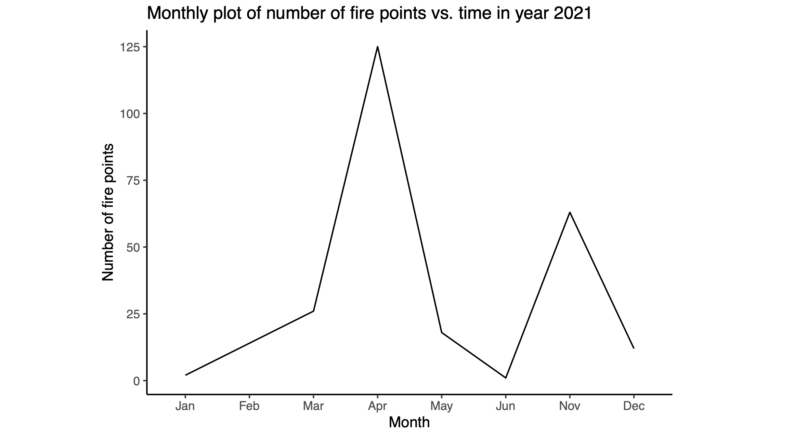
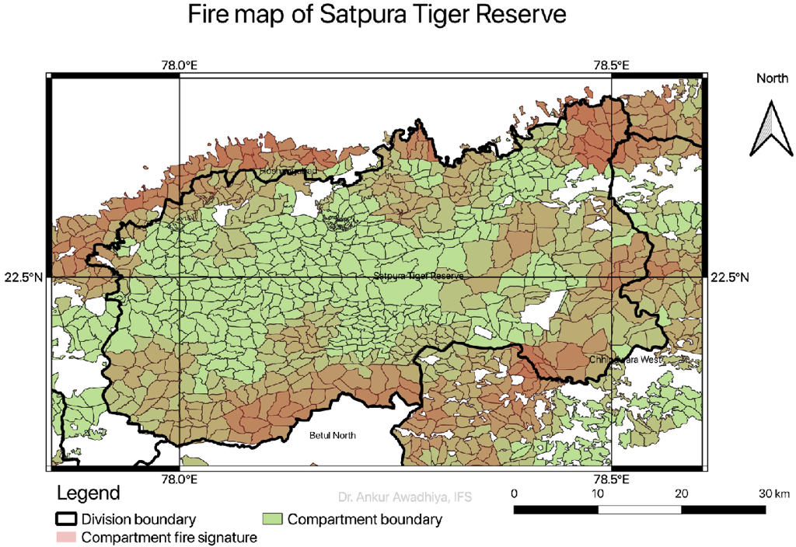
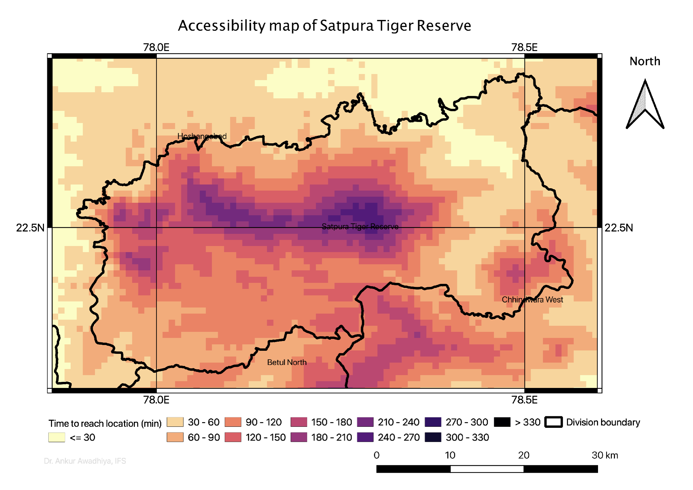
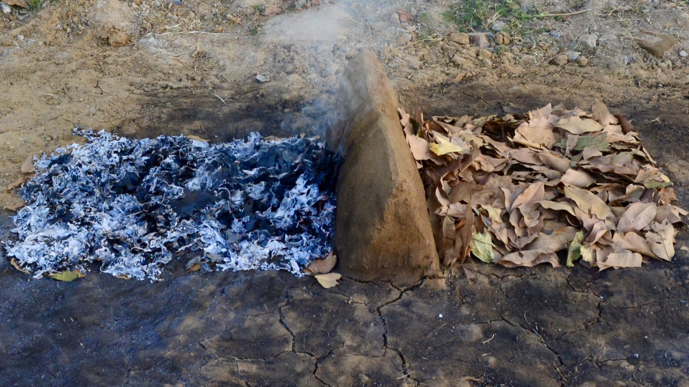
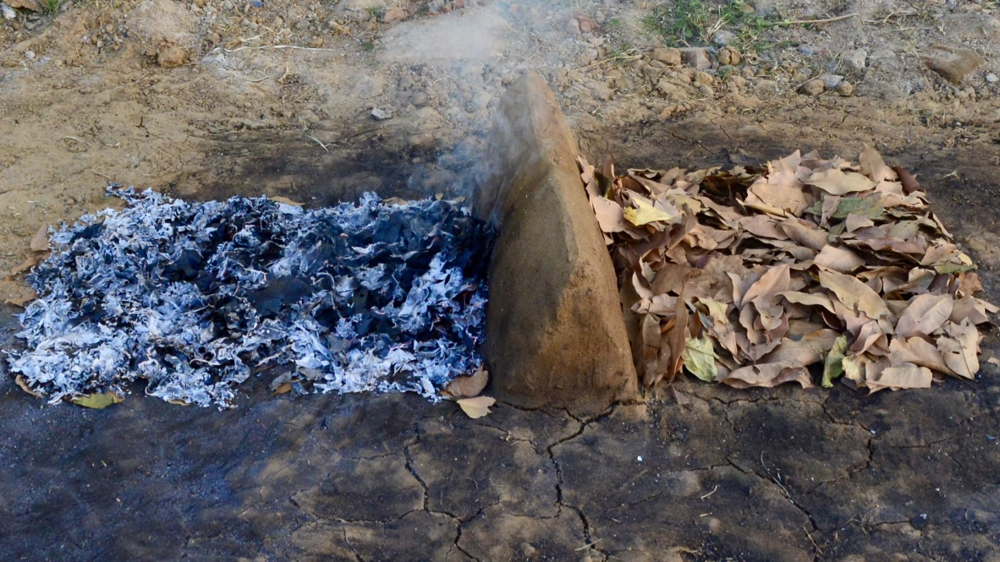

Chapter 4 Wildfire prevention
Wildfires pose a significant and escalating threat to both natural ecosystems and human settlements. Uncontrolled fires can rapidly devastate extensive landscapes, causing property damage, disrupting wildlife habitats, and compromising air quality. Consequently, the imperative is to promptly extinguish wildfires and, ideally, prevent their occurrence and subsequent spread.
Preventing wildfires demands a multifaceted approach, integrating responsible land management practices, community education, and the use of fire-resistant materials (Hesseln 2018). Effective land management includes creating firebreaks, clearing combustible vegetation, and conducting controlled burns to reduce fuel loads. Community education plays a crucial role in fostering awareness of fire safety and the importance of maintaining defensible spaces around properties. By engaging the public in these preventive measures, we seek to bolster collective resilience against wildfire risks. Furthermore, adopting fire-resistant construction materials and adhering to safe outdoor practices contribute to mitigating ignition hazards.
In this chapter, we will explore various strategies employed to prevent wildfires.
4.1 Need for data and data analysis
Data is fundamental to wildfire prevention, embodying the principle that “what cannot be measured cannot be managed.” By harnessing the power of data, we can refine our strategies and make informed decisions to better protect both natural landscapes and human communities from the destructive impacts of wildfires. This also means that we need more and more data and data analyses for effective wildfire management (Bowman 2018).
We need data for predictive modeling and risk assessment. Historical fire records, together with current weather patterns and vegetation conditions, can help pinpoint areas at high risk and to anticipate potential fire behavior (Awadhiya 2018), thus enabling the movement of men and materials to those locations where they are most needed. Advanced simulations derived from data can effectively visualize various fire scenarios and implement the most effective preventive measures, including controlled burns and strategic vegetation management in high-risk areas.
Besides historical data, we also need real-time data for monitoring and early detection to prevent the spread of wildfires once they have started. Satellite imagery, aerial surveys, and ground-based sensors provide a continuous stream of information about weather conditions, vegetation availability, and fire activity, allowing for early identification of emerging fires or hotspots, and facilitating swift action to contain them before they escalate into uncontrollable blazes.
Prior planning and resource allocation are similarly dependent on data-driven tools. Geographic Information Systems (GIS) and other analytical platforms are used to create detailed maps of fire-prone areas, infrastructure, and available resources, supporting decision-making processes, allocation of resources, and the development of evacuation plans.
Public awareness and education also benefit from a data-informed approach. Data — such as the percentage of houses with and without defensible spaces that burn in wildfires — underline and highlight the salient concepts of educational campaigns through availability heuristics (Keller and Block 1997), and thus help to foster a culture of preparedness (Jakes et al. 2003; Sturtevant and McCaffrey 2006). This initiative encourages responsible behavior, including the proper disposal of flammable materials and the maintenance of defensible space around properties. By implementing these measures, we can effectively reduce the overall wildfire risk.
Data remains of paramount importance even after the wildfire. It serves as the foundation for assessing the fire’s impact, evaluating the effectiveness of response efforts, and drawing valuable lessons from the event. Post-fire analyses inform future strategies, enhance response protocols, and bolster community resilience through inputs to the Deming’s cycle. All these pave the way for increasingly more effective wildfire management in the future.
For these reasons, we have been developing and advancing more ways to capture and analyze data for wildfire management purposes (Artés et al. 2019).
4.2 From data to information
Data (singular datum) includes raw, unprocessed facts and figures collected from various sources. Data can be quantitative or qualitative and may take various forms, such as numbers, text, or measurements. When examined directly, data often presents itself as a disorganized collection of numbers and letters, lacking any discernible pattern or meaning. In essence, data alone does not convey inherent significance or context; it is simply a compilation of distinct elements.
To make sense of data, we have moved into the domain of information. Information is what emerges when data is processed, organized, and interpreted to provide context and meaning. It involves analyzing data to uncover patterns, relationships, and insights, which can then be used to make informed decisions. While data represents the building blocks of decision-making, information is the structured and meaningful output that supports understanding and decision-making.
The journey from data to information involves several critical steps, each adding some value to the raw data (Van Der Aalst 2016). The process begins with data collection, where raw data is gathered from various sources such as sensors, surveys, or databases. This step is fundamental, as the quality and relevance of the collected data directly impact the effectiveness of subsequent analyses.
After collection, data is put through the operations of data cleaning and preprocessing. Raw data often contains inaccuracies, inconsistencies, or irrelevant details that need to be addressed. Data cleaning involves correcting errors, removing duplicates, and managing missing values. Preprocessing might include standardizing formats and normalizing values to ensure the data is consistent and suitable for analyses.
Following preprocessing, the data is integrated if it originates from multiple sources. Integration involves combining and aligning data from different origins, ensuring a cohesive dataset that provides a comprehensive view. This step is crucial for creating a unified data set that accurately reflects the full scope of the information.
With clean and integrated data, the next step is data analysis. This phase employs statistical techniques, algorithms, or models to discern patterns, trends, and relationships within the data. The analysis can be descriptive, exploratory, inferential, predictive, or prescriptive, depending on the objectives. Descriptive analysis provides a summary of the data’s fundamental characteristics, while exploratory data analysis employs visualizations to unveil inherent patterns. Inferential analysis draws conclusions about populations based on samples, and predictive analysis forecasts future trends. Prescriptive analysis recommends specific actions based on the insights gained from the data.
After analysis, data interpretation is required to make sense of the results. This stage entails contextualizing the findings to comprehend their relevance and implications. Interpretation necessitates domain expertise to draw insightful conclusions and establish connections between the data and practical scenarios.
The next step is information visualization, where the analyzed data and findings are presented in visual formats such as charts, graphs, or maps. Visualization aids in the clear and effective communication of intricate information, ensuring its accessibility and comprehensibility to stakeholders.
Once visualized, the information is communicated through reporting and communication. This entails the compilation of reports, summaries, or presentations that elucidate salient insights and provide actionable recommendations. Effective communication ensures that the information is readily comprehensible and can serve as a guiding principle for decision-making processes.
The ultimate goal of transforming data into information is to support decision-making. In this stage, the insights derived from the data serve as the foundation for strategic planning, operational decisions, and policy development. By applying this information to real-world contexts, decision-makers can make informed choices that are grounded in evidence.
Finally, feedback and iteration play a crucial role in the process. This process entails monitoring and evaluating the outcomes of decisions made based on the information provided. This feedback facilitates the refinement of data collection methods, analysis techniques, and interpretation processes, resulting in continuous improvement in the quality and utility of the information.
In the context of wildfire prevention, transforming raw data into actionable information entails a meticulous process that commences with the collection of diverse data, including weather conditions, vegetation types, and historical fire records. This data undergoes rigorous cleaning and preprocessing to rectify inaccuracies and standardize formats, ensuring its reliability. Subsequently, the data is integrated to construct a comprehensive dataset that encompasses a holistic view of fire risk factors and other pertinent information.
Through meticulous analyses, distinct patterns and trends emerge, highlighting regions with elevated fire risk due to dry vegetation and formidable winds. This data is subsequently interpreted to comprehend its implications for matters such as wildfire risk. The insights are presented graphically through risk maps and dashboards. Effective communication of these findings to stakeholders facilitates informed decision-making, thereby leading to strategic preventive measures, including targeted vegetation management and enhanced emergency response protocols. Continuous feedback and iterative refinement further enhance the efficacy of wildfire prevention strategies over time. Each step contributes value, transforming raw data into insightful knowledge that supports comprehension and sound decision-making.
4.3 Wildfire hazard indices
We often require a single number to evaluate, understand, and predict the potential risk and severity of wildfires [Figure 4.1], drawing into it the essence of multitudes of environmental and climatic factors. This may be needed for simplicity and easy dissemination of actionable information to several stakeholders, some of whom may not have the time or resources to delve deep into what each and every factor represents. For such cases, we make use of wildfire hazard indices. These indices serve as indispensable tools in the field of fire management and environmental protection, providing a comprehensive assessment of wildfire risk. This information is paramount for effectively preparing and responding to wildfire threats. By comprehending and utilizing these indices, fire management agencies, policymakers, and communities can promptly anticipate fire behavior, implement mitigation measures, and mitigate the detrimental effects of wildfires.
Figure 4.1: Fire danger rating, a single value that depicts the likelihood of initiation of fire in a given area, based on current and recent weather patterns, fuel types and availability, and moisture.
4.3.1 Components of wildfire hazard indices
Wildfire hazard indices integrate several key parameters to assess fire risk.
Weather conditions are fundamental to wildfire hazard assessment. Factors such as temperature, relative humidity, wind speed, and precipitation levels are closely monitored. Elevated fire risk can be attributed to high temperatures and low humidity, which dry out vegetation and make it more combustible. Conversely, high humidity can reduce fire risk by increasing moisture content in the fuel. Wind speed is another critical factor; strong winds can rapidly spread fires by carrying embers to new locations, thereby increasing the fire’s potential impact. Additionally, hot and dry winds can prime vegetation for burning, increasing the likelihood of a wildfire spreading swiftly. Katabatic winds blowing down from hills are especially notorious in this regard, and have played a pivotal role in the swift spread of Camp wildfire [Figure 1.1].
Secondly, fuel characteristics of the area are assessed. This encompasses the type, quantity, and condition of vegetation and other combustible materials present. Different types of fuel, such as grasses, shrubs, and trees, exhibit varying flammability and combustion characteristics. For instance, dry grasslands are more prone to ignition compared to moist, dense forests. The condition of the fuel, particularly its moisture content, significantly influences fire behavior.
Thirdly, topography influences how fires spread. The slope of the land and its aspect (the direction it faces) play pivotal roles in comprehending fire dynamics. Fires tend to spread more rapidly uphill due to the preheating of the fuel above them by the flames, facilitating their continued ascent. Additionally, the aspect of a slope influences fuel moisture levels. In the Northern Hemisphere, South-facing slopes receive more sunlight and, consequently, have drier fuels compared to North-facing slopes. Conversely, in the Southern Hemisphere, North-facing slopes receive more sunlight and, therefore, have drier fuels compared to South-facing slopes.
Additionally, drought conditions are a critical factor. Prolonged droughts can significantly reduce soil moisture and cause vegetation to dry out, enhancing its susceptibility to fire. Drought conditions also contribute to the accumulation of dead and dry fuel, further intensifying fire risk. This is particularly pronounced in regions with deciduous trees that shed their leaves during dry seasons as a moisture-saving mechanism.
Human factors also play a significant role in wildfire hazard assessment and are incorporated in wildfire hazard indices, especially since the majority of wildfires today — around 70 to 90% (Robinne and Secretariat 2021) — are caused by human activities. Land use patterns, historical fire data, and human activities such as construction, land clearing, and recreational use significantly influence wildfire risk. Regions with elevated human activity or inadequate land management practices may be more prone to ignitions and encounter heightened difficulties in suppressing wildfires.
4.3.2 Types of wildfire hazard indices
Wildfire hazard indices come in various forms, each serving distinct purposes and applications.
Fire Danger Rating Systems [Figure 4.1] are among the most commonly used indices. These systems integrate data pertaining to weather conditions, fuel availability, and topographical features to generate an index that quantifies the likelihood of wildfire ignition and subsequent spread. The National Fire Danger Rating System (NFDRS) (Deeming 1972) in the United States and the Canadian Forest Fire Danger Rating System (CFFDRS) (Stocks et al. 1989; Van Wagner et al. 1974) are well-known examples. These systems categorize fire danger into distinct levels, including low, moderate, high, very high, and extreme, thereby enabling critical and speedy decision-making in fire management.
The Fire Weather Index (FWI) is a component of the CFFDRS and focuses specifically on fire weather conditions (Van Wagner et al. 1974). This integrated system incorporates temperature, humidity, wind speed, and precipitation data to calculate fire danger levels. The Fire Weather Index generates a numerical value that quantifies the probability of fire ignition and its potential intensity, enabling fire managers to effectively assess current fire risk and make appropriate preparations.
Fire Behavior Prediction Models such as the BEHAVE system offer detailed forecasts of fire behavior based on real-time and predicted weather conditions, fuel types, and topography (Burgan 1984). These models simulate diverse fire scenarios, offering valuable insights into potential fire spread patterns, intensity, and impacts. Consequently, they are indispensable for formulating fire suppression strategies and allocating resources effectively. They may also be employed to calculate wildfire hazard indices.
Remote Sensing Indices utilize satellite and aerial imagery to provide real-time data on vegetation moisture content, fuel conditions, and other relevant factors (Leblon 2001). The Normalized Difference Vegetation Index (NDVI) (Rouse et al. 1974) is an example of such an index. NDVI measures the density of green vegetation and can assist in assessing the health and moisture content of vegetation over extensive areas. This information is paramount for monitoring changes in fuel conditions and identifying early indications of drought or fire risk. Such indices may be integrated into certain wildfire hazard indices.
4.3.3 Applications of wildfire hazard indices
Wildfire hazard indices serve multiple purposes and are utilized by various stakeholders for distinct applications. Wildfire managers employ wildfire hazard indices to make well-informed decisions regarding resource allocation, fire suppression strategies, and public safety measures. By comprehending the current fire danger levels, fire managers can prioritize areas for intervention, allocate resources more efficiently, and implement strategies to contain and control fires effectively.
Communities utilize these indices to assess their susceptibility to wildfires and devise preventive measures. Strategies informed by hazard indices include creating defensible spaces around properties, conducting controlled burns to mitigate fuel loads, and developing comprehensive evacuation plans. This proactive approach can substantially diminish the risk of property damage and bolster community resilience.
Researchers employ hazard indices to analyze trends and patterns in wildfire occurrences, serving as a proxy that incorporates fire behavior, climate interactions, and land management practices. This research also contributes to the refinement of hazard indices, enhancing their accuracy and reliability over time.
Fire management policies and practices are developed by planners based on insights gained from wildfire hazard indices.
4.4 Identifying wildfire-prone areas
Identifying wildfire-prone areas is a multifaceted process that necessitates a comprehensive understanding of various environmental, climatic, and human factors that contribute to wildfire risk. This process entails several systematic steps that are essential for the accurate assessment and prediction of regions susceptible to wildfires.
We often begin by collecting data about the place [Figure 4.2a] and time [Figure 4.2b] of historical wildfires (Awadhiya 2022b). Given that the causal factors for wildfires are not anticipated to undergo significant shifts over the next few years, we can reasonably expect that regions identified as having the highest frequency of wildfires will persistently experience an elevated incidence of wildfires in the future. Similarly, seasons (or months) characterized by exceptionally high wildfire numbers will likely continue to generate a substantial number of wildfire alerts in the immediate future.
 


Figure 4.2: Identification of fire-prone areas and causal factors.
Just using historical information, we can construct fire maps [Figure 4.2c] that represent the propensity of an area to have wildfires based on historical wildfire data (Awadhiya 2018). In the figure, forest compartments with no fire alerts in the past five years are depicted in green, while those with an increasing number of fire alerts are indicated by redder colors. A visual inspection of the figure reveals that the fringe areas of Satpura Tiger Reserve are predominantly red, while the central areas are predominantly green. This observation suggests that for effective wildfire management, a greater allocation of resources (including personnel, equipment, and watchtowers) should be directed towards the fringe areas compared to the central areas.
Certainly, we may encounter situations where an extensive wildfire in a specific year significantly reduces the fuel availability within the forest, thereby decreasing the likelihood of future wildfires. But by analyzing multi-year data, we can mitigate the influence of a single year’s wildfire on a fire map. Furthermore, our understanding of the causal factors of wildfires serves as an additional check. If these factors have remained consistent over time, we can anticipate that the wildfire pattern will also be similar to previous years.
It is estimated that globally around 70 to 90% of wildfires are started by humans (Robinne and Secretariat 2021). Thus, the presence of humans and human activities are good correlates of wildfire occurrence. When we plot the accessibility map of Satpura Tiger Reserve [Figure 4.2d] representing time taken to reach a spot from the nearest human habitation, we find that inaccessible areas and areas far from human habitations have fewer wildfires, and accessible areas close to human habitations have more wildfires. If there has not been a substantial shift in the distribution of human populations (for instance, through the expansion or relocation of habitations to newer areas), and no significant alteration in accessibility patterns (such as the construction of new roads or substantial changes in fuel prices and vehicle availability), we can anticipate that the fire map will provide a reasonably accurate representation of the current situation.
We can also explore changes in human activities, particularly changes in agriculture. In figure 4.2e, we observe near-real-time fire alerts in the SimplyFire application. The depicted area is the Sheopur district of India, with the district boundary outlined in blue. Forest areas are situated in the right portion of the district and are overlain with forest beat boundaries in green. Agricultural areas are located in the left portion of the district and do not contain green lines representing forest beats. Fire alerts from various satellites are depicted as red dots, pink dots, and fire symbols. It is evident that while agricultural and non-forest lands are saturated with fire signatures, there are minimal or no fire signatures in the forested areas. This pattern is attributed to farmers burning agricultural waste in their fields.
Similarly, in figure 4.2f, we observe near-real-time fire alerts in the SimplyFire application. The depicted area encompasses the vicinity of the Serra do Pardo National Park in Brazil, bordering the Amazônia National Park. The verdant forested regions are depicted in a deep green hue, while areas subjected to deforestation are portrayed in a light brown color. Fire alerts from various satellites are represented as fire symbols in distinct colors. It is evident that the deforested lands are saturated with fire signatures, while there are minimal or no fire signatures in the forested areas. This pattern has emerged due to the expansion of agriculture through the clearing of forested land through deforestation, followed by the subsequent burning of the cleared areas.
If there have not been substantial alterations in such human activities, we can anticipate that wildfire signatures will adhere to historical patterns.
At a more granular level, we may also wish to analyze other parameters, such as meteorological data, including temperature, humidity, wind speed, and precipitation; vegetation data, including the types of plants, their density, and moisture content; and topographical data, detailing slope, aspect, and elevation, for a better understanding of how wildfires will progress once they are initiated. Readings of these parameters may be had using remote sensing satellites, weather stations, sensor systems, or even community observations. At this scale, we have shifted from basic fire maps towards fire simulations. We shall discuss these in depth in chapter 9 section 9.3.
4.5 Dissemination of information
Once wildfire-prone areas have been identified or a wildfire has been detected, the subsequent action is to disseminate this information, critical data, and guidance to all pertinent stakeholders. This process is paramount for enhancing community preparedness, informing decision-making, and coordinating response efforts. Effective dissemination involves utilizing diverse communication channels [Figure 4.3] and methods tailored to different audiences, ensuring that the information is both accessible and actionable.


Figure 4.3: There are several methods to disseminate fire-related information.
Wildfire portals generally disseminate information through email, SMS alerts, and WhatsApp messages [Figure 4.3a]. Social media has become a crucial platform for disseminating critical information, including fire alerts, personnel movements, equipment deployments, and updates on firefighting strategies. It also facilitates the sharing of multimedia content, such as photographs and videos. Additionally, the formation of groups enables interested stakeholders, including new staff members, citizens, journalists, and others, to easily join relevant groups and receive timely information.
For larger, more permanent datasets such as fire maps, fire compendia, etc., websites are good options [Figure 4.3b]. These resources are readily accessible to members of the public, staff, researchers, and other interested individuals. They also serve as a platform to host essential materials such as standard operating procedures and films that educate the general public about wildfire risks and preventive measures. These resources are crucial for fostering community engagement and preparedness. Furthermore, they can be utilized as reference materials to support public awareness campaigns, workshops, and community interactions.
Information pertaining to fire management professionals may be disseminated in the form of comprehensive technical reports and concise briefings that provide in-depth analyses of wildfire risks, predictive models, and strategic recommendations. These documents can be disseminated through formal channels such as agency meetings, professional conferences, and specialized publications, and may also be hosted on websites. Additionally, scenario-based training programs and simulation exercises are crucial for equipping fire management professionals with the necessary skills and knowledge to effectively manage wildfire situations. These programs assist professionals in refining their response strategies and enhancing their preparedness for actual-world incidents.
Real-time operational dashboards [Figure 4.3c] provide fire managers with a comprehensive view of current conditions, enabling them to make informed decisions regarding resource allocation and response strategies. The use of these tools enhances situational awareness and supports effective management during wildfire events. Web applications such as SimplyFire display current fires at various scales, from sub-county [Figure 4.3d] to state [Figure 4.3c], country, and global levels by integrating near-real-time satellite alerts with GIS platforms.
Coordination with local governments and agencies is facilitated through interagency meetings involving local, state, and federal agencies. These meetings enable the exchange of information and the coordination of wildfire management efforts. Collaborative databases and platforms facilitate the access and sharing of critical information, including risk assessments, resource availability, and operational plans. Urgent information regarding wildfire risks and emergency procedures is disseminated through public alert systems. These alerts, disseminated through various channels such as text messages, emails, television, radio, and automated telephone calls, provide timely updates on fire conditions and evacuation orders. Effective public alerts ensure that residents receive timely and crucial information, enabling them to take appropriate actions to protect themselves and their property.
Collaboration with community organizations, such as neighborhood associations and environmental groups, facilitates the dissemination of wildfire prevention messages. Similarly, partnerships with private sector entities, including utility companies and businesses, contribute to wildfire prevention efforts. These partners provide valuable resources by sharing information, implementing safety protocols, and supporting community preparedness measures.
Establishing feedback mechanisms is an integral component of information dissemination. It enables stakeholders to provide input on wildfire prevention initiatives and share their observations. This feedback is invaluable for refining strategies and enhancing the effectiveness of information dissemination. Collaborating with the community and other stakeholders ensures that prevention efforts are responsive to local needs, conditions, and aspirations.
4.6 Community involvement and cooperation
Community involvement and cooperation are fundamental to the success of wildfire prevention strategies. Engaging local residents, organizations, and non-governmental agencies fosters a collaborative approach to managing wildfire risks and mitigating their impacts. Effective wildfire prevention requires not only the implementation of technical measures but also the active participation of the community. By working together, communities can enhance their preparedness, strengthen their resilience, and ultimately contribute to a more comprehensive wildfire management strategy.
Public education is essential for wildfire prevention (Prestemon et al. 2010). Fire agencies and community groups collaborate to organize programs that educate residents about wildfire risks and preventive measures. These programs encompass various topics, such as defensible space and vegetation management. By disseminating this information, these initiatives empower residents to take proactive steps in safeguarding their properties. The Firewise Communities program (Rains and Hubbard 2002) exemplifies successful community engagement by encouraging residents to implement fire-safe practices around their homes. Activities include creating defensible space and using fire-resistant materials, enhancing safety and fostering collective wildfire risk reduction in neighborhoods.
Developing neighborhood fire plans involves collaboration among local residents, fire departments, and organizations (Shiralipour et al. 2006). These plans outline specific strategies for preventing wildfires and executing evacuation procedures, fostering a sense of shared responsibility and preparedness. Volunteer fire departments and services [Figure 4.4] also play a crucial role in wildfire prevention, as dedicated volunteers assist with fire safety inspections and emergency response, enhancing local firefighting capabilities and supporting broader management initiatives (Lozier 1976; Perkins 1987).
Figure 4.4: Volunteer Fire Services play an important role in fire control in South Africa.
Effective wildfire prevention necessitates robust collaboration between local governments and fire management agencies. Partnerships facilitate the exchange of resources and coordinated risk assessments, ensuring a comprehensive approach to wildfire management. A dialogue is often needed between government officials and community members [Figure 4.5], where the needs and aspirations of wildfire management are discussed, together with the requirements of the community to achieve these aspirations.
Figure 4.5: Dialogue between government and community members, here done as a side-event during medical camps, goes a long way in boosting cooperation.
Conducting fire drills and evacuation exercises is essential for preparing communities for emergencies, allowing residents to practice procedures and identify potential challenges (Stephens et al. 2023). Regular participation in these activities enhances overall readiness for actual wildfire events. Additionally, emergency alert systems are crucial for timely communication during wildfire incidents, providing residents with updates on fire conditions and evacuation orders (Doermann, Kuligowski, and Milke 2021). Community involvement in setting up these systems ensures their effectiveness and enhances residents’ preparedness and responsiveness.
Promoting sustainable land use practices is also important for wildfire prevention, as responsible vegetation management and fire-resistant landscaping contribute to reducing fire hazards (Gibbons et al. 2012; Steelman and Burke 2007). Community advocacy and education on these practices can help create safer environments, supporting long-term fire prevention efforts and enhancing community resilience.
4.7 Use of fire lines and fire breakers
Fire lines are pivotal tools in the strategic management of wildfires, serving as both a preventative and defensive measure to control and mitigate the spread of fires (Plucinski 2019b). Their primary role is to establish barriers that interrupt the continuity of fuel sources, thereby containing wildfires within defined limits. They are theoretically derived from fire triangles [Figure 1.3]. Since fire necessitates a combination of fuel, oxygen, and heat, the removal of fuel extinguishes a fire. Fire lines employ this principle to extinguish fires by establishing zones devoid of any vegetation matter that could serve as fuel for the advancing fire front. Comprehending the design, implementation, and maintenance of fire lines is paramount for effective wildfire prevention and management. This ensures that resources are efficiently allocated and that communities and natural resources are safeguarded from the catastrophic consequences of uncontrolled fires.
4.7.1 Purpose and function of fire lines
The primary function of fire lines is to contain and control the spread of wildfires by creating fuel-free zones that act as barriers to the advancing flames (Lemons, Prichard, and Kerns 2023). By eliminating or clearing vegetation and combustible materials from a designated area, fire lines establish boundaries that restrict the spread of a fire. This containment strategy is crucial in localizing the fire, enabling firefighting teams to effectively manage its containment. Fire lines also serve as a barrier, preventing fires from encroaching on unburned areas and minimizing the overall impact of the wildfire. This reduces the need for excessive firefighting resources and facilitates efficient resource allocation.
Fire lines also play a crucial role in safeguarding valuable assets, such as residential areas, infrastructure, and natural resources. By establishing fire lines around high-risk zones, communities can effectively protect homes, critical infrastructure, and sensitive ecosystems from the encroaching flames. This protective measure is particularly important in regions where wildfires pose significant threats to human safety and environmental well-being. Effective fire lines ensure that these critical assets are shielded from potential damage, thereby reducing the overall impact of the wildfire on the community and its resources. In this capacity, fire lines serve as defensive structures.
4.7.2 Types of fire lines
Fire lines can be categorized based on their construction method, each designed to suit specific environmental conditions and fire behaviors. The primary types of fire lines are:
Dozer lines: These fire lines are created using bulldozers or other heavy machinery to clear a wide strip of vegetation and soil. Dozer lines are highly effective in combating large-scale wildfires due to their capacity to establish substantial and enduring firebreaks. They are particularly valuable in regions with high fuel loads, where they are frequently utilized in conjunction with other fire suppression techniques.
Hand lines: Constructed manually by firefighting personnel using hand tools such as shovels, rakes, and hoes, hand lines are suited for smaller or more intricate areas where dozer lines may be impractical. Although less extensive than dozer lines, hand lines are valuable for creating precise firebreaks and are frequently employed in more localized or detailed fire suppression endeavors.
Burned-out lines: This technique involves setting controlled burns along an existing fire line to consume any remaining fuel between the fire line and the advancing fire. Burned-out lines serve as a valuable reinforcement for containment lines by ensuring that no combustible materials remain, thereby preventing the fire from sustaining itself. This technique is frequently employed in conjunction with other fire suppression strategies to augment the effectiveness of fire lines.
Besides these, green fire lines may be constructed by planting of trees and vegetation that are fire-resistant and hold lots of water in their bodies; this water can then quench the fire front by removing heat through the process of evaporation. Such fire lines need to be planned quite in advance, and are not currently in large-scale operational use.
At the time of wildfire, wet fire lines may also be constructed by dumping large quantities of water (often in conjunction with fire retardants) in a curved line to encircle and contain the fire.
4.7.3 Site selection and preparation
Effective fire line construction requires a careful consideration of site conditions to ensure optimal performance:
Terrain and vegetation: The type of terrain and vegetation influences the choice of construction method and the effectiveness of the fire line. Steep slopes, rocky terrain, and dense vegetation necessitate specialized techniques and equipment to effectively establish fire lines.
Weather conditions: Weather factors, such as wind direction and speed, play a critical role in fire line construction and effectiveness. Fire lines should be strategically placed to account for prevailing wind patterns, which can affect the direction and intensity of the fire.
Accessibility: Ensuring that the fire line site is accessible to firefighting equipment and personnel is essential for both construction and maintenance. Accessibility considerations encompass the transportation of machinery, tools, and personnel to the site, as well as the ease of managing and reinforcing the fire line. Fire lines also serve as roads for the movement of vehicles, machinery, and personnel, and their width is frequently increased to facilitate their passage without impediment.
4.7.4 Implementation of fire lines
Construction of fire lines involves several key techniques to ensure their durability and effectiveness:
Clearing vegetation: The removal of vegetation and combustible materials is fundamental to creating a fire line. This process entails the felling of trees, the removal of shrubs, and the clearance of debris to establish a clear, fuel-free barrier. Proper clearing is paramount to ensure the effective functioning of the fire line in preventing the spread of fire.
Grading and scarification: In some cases, grading or scarifying the soil may be necessary to remove additional fuel material and create a more effective barrier. This technique entails breaking up the surface soil to enhance the fire line’s capacity to withstand the fire’s heat and prevent its advance. The process involves burying grass and debris beneath a layer of non-combustible soil. Grading and scarification are also employed to channel rainwater in a manner that does not alter the fire line, ensuring its long-term functionality over several years.
Reinforcement: Fire lines may require reinforcement to maintain their effectiveness over time. This can include adding additional fuel breaks33, reinforcing the edges with barriers and fire breakers, and conducting regular inspections to address any weaknesses. Reinforcement ensures that the fire line remains functional and effective throughout the duration of the fire.
Monitoring and adjustment: Once constructed, fire lines must be continuously monitored and maintained to ensure their ongoing effectiveness. Regular inspections facilitate the identification and resolution of potential issues, including erosion, vegetation regrowth, and fire damage. Adjustments and repairs may be required in response to evolving fire conditions, weather patterns, and the wildfire’s progression. Ongoing maintenance is paramount to ensure the fire line’s continued effectiveness.
Effective fire line implementation necessitates collaboration among firefighting agencies, local communities, and other stakeholders. Engaging the community in comprehending the purpose and significance of fire lines, as well as involving them in fire prevention initiatives, enhances the overall success of wildfire management strategies. Agency involvement ensures that fire lines are meticulously constructed and maintained in accordance with established best practices and that they are seamlessly integrated into comprehensive fire management plans.
Firelines are an indispensable element of a comprehensive wildfire management strategy. They are employed in conjunction with other fire suppression tactics, including aerial firefighting, controlled burns, and water drops. By integrating firelines with these methods, firefighting efforts are optimized, and the overall effectiveness of wildfire management is significantly enhanced.
4.7.5 Case study from Madhya Pradesh
The state of Madhya Pradesh, situated in the central region of India, is renowned for harboring a diverse array of flagship species, including tigers, leopards, bears, and elephants. Vast sections of the state are covered with grasslands, deciduous forests, and mixed forests that are prone to wildfires [Figure 4.6a–b]. To effectively manage wildfires, construction of fire lines commences in November, frequently collaborating with local communities. This collaborative effort not only enhances wildfire control but also generates local employment opportunities. During construction, grasses, herbs, shrubs, and small plants in the selected regions are cut and left on-site to dry for approximately two months [Figure 4.6c]. This initial phase, colloquially known as “line katai” (cutting of the fire line), involves removing the vegetative material to prepare for the subsequent burning process.
Figure 4.6: Need, construction, and working of fire lines.
In preparation of burning, ground leaf litter is removed and collected in the center of the fire line [Figure 4.6d]. Next, the dried plant biomass is set ablaze in a controlled manner. This step, referred to as “line jalai” (burning of the fire line), creates a cleared strip devoid of flammable material [Figure 4.6e]. The fire line is burned from both sides, with the burning fronts converging in the center and extinguishing each other. This final burning ensures that the fire line is effectively established and maintains its function as a barrier against the spread of wildfires.
In Madhya Pradesh, fire lines are highly effective in preventing the spread of surface fires. The fundamental principle behind fire lines is the concept of fuel exhaustion. When a fire front encounters a fire line, it encounters a barrier of incombustible bare mineral earth. With the fuel behind the fire front having already been consumed, the fire is unable to sustain itself without a continuous supply of fuel. Consequently, it begins to abate and eventually extinguishes. Simulation experiments have demonstrated that this principle is highly effective [Figure 4.6f–h] (Awadhiya 2017).
In this manner, fire lines possess substantial capabilities in safeguarding forest patches from fires under controlled circumstances.
4.7.6 Limitations of traditional fire lines
The effectiveness of fire lines can easily be compromised by wind, which can carry burning leaf litter across the fire line. Another significant issue is the phenomenon of bleeding [Figure 4.7a], where the fire used during the construction of a fire line escapes into adjacent forest areas, potentially burning the very forest that the fire line was meant to protect.
Figure 4.7: Some limitations of traditional fire lines.
Additionally, traditional fire lines are susceptible to compromise from new biomass. This biomass can enter through infiltration [Figure 4.7b–d], where dry leaves shed during the dry season, and twigs and branches from trees fall over fire lines. Infiltration can also happen when winds bring dry litter to an existing fire line. New biomass can also occur through the process of repopulation [Figure 4.7e], where new grass grows in the bare soil left by the fire line. This is especially common in burned-out fire lines, since the ash that remains acts as a fertilizer for the new flush of grasses. Repopulation can occur as early as within two to three weeks, greatly diminishing the fire line’s efficacy.
Mosaicking can also occur when unburnt biomass is interspersed within the fire line due to incomplete burning or disruptions caused by air movement [Figure 4.7f]. These phenomena undermine the continuity of fire lines, and such breaches can allow fire to traverse across the fire line, leading to widespread burning of the forest.
4.7.7 Construction of fire breakers
Any break in the fire line, through new biomass or left-out biomass, can gravely affect the utility of the fire line, as can be observed through simulation experiments [Figure 4.8a–c]. Any remaining biomass can serve as a bridge to allow the passage of fire to the other side of the fire line.
Figure 4.8: The need, construction, and implementation of fire breakers.
A way out is the construction of fire breakers [Figure 4.8d–e] — structures surrounding fire lines that aid to stop the infiltration of new biomass, and also prevent the movement of fires if the biomass has accumulated for some reason. For the construction of fire breakers, two main prerequisites can be established: the fire breakers should not be so high as to fragment wildlife habitats, and they should be constructed from locally available materials to minimize ecological impact. Local soil can be utilized directly or supplemented with water and sand to construct firebreaks. A typical width of 4.5 inches and a top height of 9 inches is often sufficient for most forest floors, although adjustments may be necessary to accommodate specific local conditions. Subsequently, the firebreaks are sun-dried on-site for a few days.
Firebreaks are simple, ephemeral, cost-effective structures designed for fire containment. They are readily constructed and maintained throughout fire seasons. It is recommended that prismatic fire breakers be used alongside traditional fire lines [Figure 4.8f] to significantly enhance their effectiveness. Firebreaks can not only prevent bleeding by providing physical barriers against the movement of leaf litter and smoldering embers but also guard against fuel deposition through infiltration. Constructing rows of firebreaks parallel to fire lines can trap infiltration between them, which can then be regularly cleared through sweeping, blowing, or controlled burning. This approach also addresses issues of repopulation and mosaicking by allowing frequent burning of fuel loads. Firebreaks should be constructed higher than the depth of accumulated leaf litter, ideally twice to thrice the depth, while remaining low enough to avoid habitat fragmentation. Any locally available material, including soil mixed with sand or straw for reinforcement, or small pebbles and rocks, may be used.
In addition to their utilization with fire lines, fire breakers can also be deployed independently. When used alone, they should be arranged in rows to ensure a sufficient width of incombustible material for effective fire containment.
4.7.8 Effectiveness of fire breakers
Both cuboidal and prismatic fire breakers are effective in containing the spread of fires [Figure 4.9a–c]. When fire fronts encounter firebreaks, they cease their advance and extinguish, leaving the vegetation and dry leaves on the opposite side undamaged. Firebreaks serve as vertical barriers composed of incombustible mineral earth, effectively suppressing a fire by severing its fuel supply and preventing its passage. Their physical structure also restricts the movement of fuel and burning debris, significantly diminishing the likelihood of fire spreading. Consequently, firebreaks demonstrate superior effectiveness compared to conventional fire lines in practical field scenarios.
 

Figure 4.9: Effectiveness of cuboidal and prismatic fire breakers against fire fronts and infiltration.
While simple fire lines lose their effectiveness through infiltration, cuboidal and prismatic fire breakers fare much better. Although wind-blown burning debris can occasionally re-ignite the fire on the other side while using a cuboidal fire breaker [Figure 4.9d–i], prismatic fire breakers prevent even that, since any infiltration is divided into two sections — left and right — and thus no combustible material is able to remain on top [Figure 4.9j–l]. Although a fire front can ignite the accessible flank, it cannot descend slopes to reach the second flank, thereby protecting the opposite side. Consequently, prismatic fire breakers are most effective in countering infiltration, followed by cuboidal fire breakers, while traditional fire lines are ineffective in such scenarios.
In field situations, fire breakers can not only be constructed using hand tools (providing employment opportunities to members of the local community), but also using agricultural machines such as bund makers in areas where the soil and topography permit the use of such machines.
4.8 Reduction of fuel load
Reduction of fuel load is a crucial strategy in wildfire management aiming to minimize the risk and impact of wildfires (Brodie et al. 2024). Reducing the quantity of fuel available to wildfires can substantially enhance landscape resilience, thereby mitigating the likelihood of severe fires and safeguarding both human settlements and natural ecosystems. Several key practices are employed to achieve this objective:
- Vegetation thinning: Vegetation thinning involves selectively removing excess vegetation, including small trees, shrubs, and underbrush. By creating more open spaces within forested areas, thinning reduces the density of flammable vegetation. This process also assists in decreasing competition for resources among plants, which can prevent the accumulation of dense, highly combustible fuel beds that contribute to intense wildfires. Thinning may also benefit certain wildlife by permitting easy movement, and also tourism since animals can be observed to larger distances [Figure 4.10]. This thinned vegetation also acts as a fuel break, and a safe place for firefighters to take stand against a wildfire.

Figure 4.10: Vegetation thinning and removal of Lantana plants in Mudumalai National Park reduces fire risk while improving habitat and tourism.
Removal of dead and decaying material: Dead and decaying plant material, such as fallen branches and decomposed trees, can accumulate over time and become a significant fire hazard. Regular removal of this debris reduces the availability of fire-sustaining materials. This is typically achieved through manual collection, mechanical means, or by utilizing methods such as mulching to facilitate on-site degradation of the material.
Management of leaf litter and branches: Leaf litter and fallen branches often create a continuous layer of fuel on forest floors, which can facilitate the spread of fires [Figure 4.7d]. Effective management entails the collection and disposal of this material, either through raking, shredding, or other mechanical processes. This practice helps to prevent the buildup of a substantial fuel source.
Grazing and cutting: Controlled grazing by livestock and mechanical cutting are additional methods for managing vegetation density and reducing fuel loads. Grazing can help maintain open spaces by limiting the overgrowth of grasses and shrubs. Mechanical cutting can similarly be used to manage vegetation and prevent excessive fuel accumulation (Rouet-Leduc et al. 2021).
4.9 Cold burning
Cold burning, also known as prescribed or controlled burning, is a technique used to manage fuel loads and reduce wildfire risk through the intentional setting of fires under controlled conditions (R. K. Miller, Field, and Mach 2020). Cold burning necessitates meticulous planning, encompassing the selection of the most suitable timing contingent upon weather conditions, fuel moisture levels, and seasonal variations. Optimal conditions for cold burning are characterized by elevated humidity, diminished wind velocities, and moderate temperatures. These conditions guarantee that the fire maintains a low-intensity and controllable state.
Prior to initiating a controlled burn, firebreaks or barriers are established to confine the fire within a designated area. Continuous monitoring of weather conditions and adjustments to burning plans are essential to maintain control.
During the burn, firefighters employ techniques such as backburning and flanking to manage the fire’s intensity and direction. Backburning entails igniting fuel in advance of the primary fire to establish a controlled barrier. Flanking entails burning the periphery of a fire to restrict its expansion. The primary objective is to consume low-intensity fuels while preventing the fire from escalating.
After the burn, monitoring is conducted to assess the effectiveness of the operation and to ensure that no smoldering pieces remain that may ignite a fire. This phase also includes evaluating environmental impacts and making necessary adjustments to fuel management strategies.
Cold burning serves as an effective method in reducing the accumulation of combustible materials, thereby mitigating the risk of severe wildfires. Additionally, it facilitates the growth of a new flush of vegetation that can serve as a food source for wild animals. Regular cold burning can also promote the establishment of fire-resistant vegetation through the continuous removal of fire-susceptible vegetation.
4.10 Species-selection for wildfire prevention
Different plant species exhibit varying influences on wildfires. Some plants shed leaves or bark that, upon drying, become readily available fuel sources. Others possess numerous thin, wispy branches that are highly susceptible to ignition. Some plants produce oily resin with high calorific values. Conversely, certain plants lack these tendencies. Succulent plants, for instance, store substantial amounts of water within their bodies, which can effectively mitigate the intensity of wildfires.
For these reasons, the selection and planting of suitable plant species can play a momentous role in wildfire prevention and management (W. J. Bond and Van Wilgen 2012). By strategically selecting appropriate vegetation, it is possible to significantly influence fire behavior, thereby reducing the risk of wildfires and enhancing the effectiveness of other fire prevention measures. This approach entails comprehending the characteristics of various plants and how their properties can be harnessed to mitigate fire hazards.
4.10.1 Characteristics of fire-resistant plants
To effectively manage wildfire risk, it is essential to select plants with specific traits that make them less susceptible to ignition and more capable of reducing fire spread (Colorado and Henkin 2023; Detweiler, Fitzgerald, et al. 2006; Moore-Gough, Gough, and Major 2001). The first trait is low flammability. Plants with low flammability are less likely to catch fire and contribute to the spread of wildfires. Key characteristics include:
High moisture content: Plants with high moisture levels in their tissues, such as succulent leaves and stems, are less prone to ignition. Species such as the sedum (Sedum spp.) and various ferns exhibit high moisture content and are less flammable.
Low volatile oils: Plants with low concentrations of volatile oils or resins are less likely to ignite easily. Species such as the eastern red cedar (Juniperus virginiana) and the white oak (Quercus alba) are some examples having low resin content compared to their compatriots.
Non-resinous substances: Plants that produce minimal resin or gummy substances are less likely to catch fire. Examples include the California buckwheat (Eriogonum fasciculatum) and certain types of grass species.
We also choose plants with low crown density. Plants with a low density of foliage or branches in their upper canopy help prevent crown fires, where flames move from treetop to treetop. Trees with open, irregular crowns reduce the likelihood of fire spreading through the canopy. Non-deciduous species, such as the American beech (Fagus grandifolia) and the loblolly pine (Pinus taeda), which have less dense foliage, can be advantageous in this context.
Fire-resistant bark is another useful trait. Certain tree species with thick, fire-resistant bark can better withstand the heat of a wildfire and protect the inner tissues of the tree. Trees such as the Douglas fir (Pseudotsuga menziesii) and ponderosa pine (Pinus ponderosa) are noted for their thick bark, which provides insulation against high temperatures.
4.10.2 Recommended plant species
Often the best-suited plants are native species (Zouhar 2008). Native plants are well-adapted to the local climate and soil conditions. In wildfire-prone areas, they are typically fire-resistant species that have been able to survive despite frequent wildfires. In addition, they typically require less water and maintenance and are more resistant to local pests and diseases — factors important for integrated wildfire management since dry, hollow, and perforated trees burn easily. In this way, amalgamating native species into fire management plans enhances ecological stability and resilience while concomitantly reducing fire risk.
Several plant species are particularly effective for fire management due to their fire-resistant properties:
Grasses: Low-growing grasses such as buffalo grass (Buchloe dactyloides) and fescue varieties are effective ground covers that help reduce fuel load and limit fire spread.
Shrubs: Fire-resistant shrubs like California lilac (Ceanothus spp.), manzanita (Arctostaphylos spp.), and the New Jersey tea (Ceanothus americanus) are beneficial plants since they have lower flammability compared to many others, while providing valuable ground cover.
Trees: Fire-resistant trees such as the Douglas fir (Pseudotsuga menziesii), ponderosa pine (Pinus ponderosa), and the white oak (Quercus alba) are well-suited for wildfire prevention due to their thick bark and lower resin content.
Non-deciduous (evergreen) species are particularly valuable in wildfire prevention due to their all-season foliage which helps maintain ground cover while having low flammability. Examples include Ponderosa pine (Pinus ponderosa) (known for its thick, fire-resistant bark and ability to survive moderate fires), California bay laurel (Umbellularia californica) (provides dense cover but has lower flammability due to its high moisture content), and Mediterranean cypress (Cupressus sempervirens) (this species has a dense growth habit but acts as a barrier to fire spread due to high moisture content of its leaves).
4.10.3 Landscaping practices
Landscaping practices such as creating defensible space and using firebreaks supplement the use of fire-resistant plants and accentuate their benefits (Dennis et al. 1999; Kent 2019). Defensible space around structures involves managing vegetation to reduce fire risk. Key practices include:
Spacing plants: Proper spacing between trees and shrubs reduces fuel continuity and prevents fire spread. Ensuring adequate gaps between plants may also help inhibit the movement of flames.
Maintaining moisture: Regular watering of plants ensures high moisture content, reducing flammability. This practice is crucial for maintaining a low-risk environment.
Removing dead material: Regular removal of dead leaves, branches, and other flammable debris prevents the accumulation of fuel that can contribute to fire spread.
Firebreaks, on the other hand, are zones devoid of vegetation or featuring low-flammability plants that act as barriers to slow or halt the progress of a fire. Incorporating fire-resistant and non-deciduous species into these areas enhances their effectiveness. Firebreaks can be constructed using fire-resistant plants or as areas left with bare soil to create a physical barrier against advancing flames, aiding the defense in depth by slowing the movement of wildfires.
References
Areas with reduced vegetation and fuel.↩︎